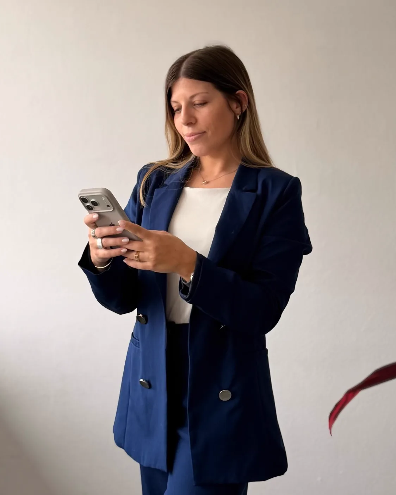

Diseño gráfico | UX/UI
proyectos
qué hago
Sobre mí
Herramientas
- Illustrator
- Photoshop
- Premiere
- InDesign
- After Effects
- Canva
- Figma
- IA
Contacto
Hablemos
de tu marca
Branding, identidad visual y diseño web.

© 2026 Luciana Bevilacqua
Volver arriba